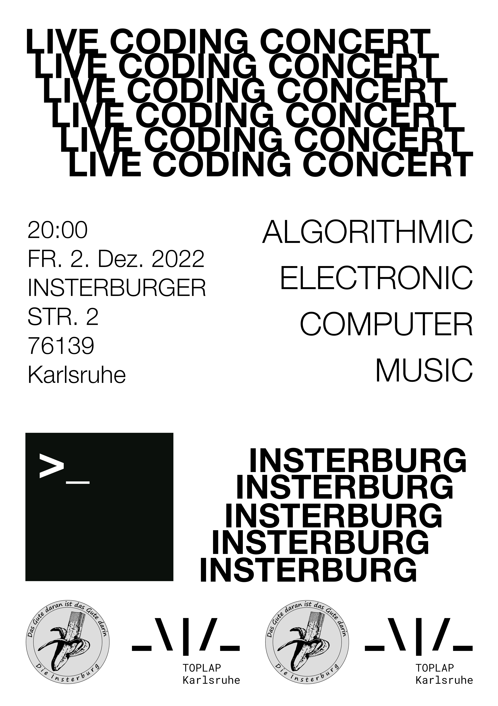

_\|/_
TOPLAP Karlsruhe
👋 Who we are
We are a live coding community based in Karlsruhe, Germany. We want to meet regularly in the physical and virtual space, organize workshops and concerts and connect with other live coding communities all around the globe.
📝 Get in touch
Want to join us? We're currently mostly organized via a Signal chat group and Discord. Send us an email with a quick introduction of yourself and what you do and we'll add you! If you have any other inquries also don't hesitate and write.
📅 Upcoming
-
April 15st 2023, Algorave @ Jubez Karslruhe (DE)
⌛️ Past Events
-
Friday, December 2nd 2022, Live Coding Concert @ Insterburg Karslruhe (DE)
with pRovInzhOrsT, dkyuh, Elmo, luiiuuuiiiii, Michele Samarotto, Kaspars Jaudzems (asystemofcells), Andres Corsair and friends.
Saturday, May 21st 2022, Algorave @ Jubez Karslruhe (DE)
TOPLAP Karlsruhe showcase with Attrique Orgeat, dkyuh, Elmo, luiiuuuiiiii, Lukijanova, Michele Samarotto and Okbaj. » More info
Sunday, February 27th 2022
TOPLAP Karlsruhe inaugural live stream
💻 KA Live Coders
- Benoît and the Mandelbrots
- Atrique Orgeat
- luiiuuuiiiii
- Elina Lukijanova
- Kaspars Jaudzems (asystemofcells)
- dkyuh
- pRovInzhOrsT
Add yourself via GitHub or get in touch ...
#️⃣ Social Media
🌈 Code of Conduct
The Short Version
We are dedicated to providing a harassment-free experience and a safer space for everyone, regardless of gender, gender identity and expression, age, sexual orientation, disability, physical appearance, body size, race, ethnicity, religion (or lack thereof), technology choices, and so on. This applies both in person or via online media.